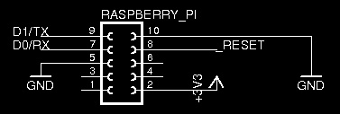

Hi everyone!
I am the happy owner of a RFM12pi: I want to make a wireless hygrometer.
I just unboxed the little thing and, if I've understood correctly from your schemes (http://wiki.openenergymonitor.org/index.php?title=RFM12Pi_V2) it should use 10 pins from my Raspberry PI, including all its 5.0v pins.
Can I simply put the RFM12pi on a breadboard with correct wiring (I have this: http://www.adafruit.com/products/1105) and use my 5.0v for my temperature sensor and a led or I risk to damage the RFM12pi and/or the Pi itself?
Thanks for your time and patience :)
Re: RFM12pi installation with Adafruit Breakout Cobbler will use all my power?
Have another look at the page you linked to.
If you scroll down the page to the "Design Files & Referance(sic)" you can see which pins the RFM12pi is actually using rather than just blocking.
The easiest way is to look at the second image and the top part labeled "Raspberry_Pi", although the diagram is reversed to check the pin number position with the first diagram.
Both show that the board isn't using pins 1&3 which are the Raspberry Pi's two 5v pins).
Re: RFM12pi installation with Adafruit Breakout Cobbler will use all my power?
Hello and thanks for your time!
I am investigating further but I don't get what you say.
100% because of my poor schematic reading skills...
I've tried looking close in this pic (from the rfm12pi inventor):
http://harizanov.com/wp-content/uploads/2013/02/IMG_1900.jpg
But I clearly see that upper 10 pins on the raspberry GPIO are occupied by the rfm12pi and therefore (http://www.megaleecher.net/sites/default/files/images/raspberry-pi-rev2-...) my 3.3v and 5.0v pins should be covered by the rfm12pi...
From your previous answer I understand that it shouldn't be this way...
What am I missing?
Re: RFM12pi installation with Adafruit Breakout Cobbler will use all my power?
The RFP12Pi uses a connector that occupies the first 10 pins as it gives the board some stability and because it is easier than just having connectors to the pins it needs. (probably also cheaper)
But on the diagram I suggested you looked at you'll see this.

So when you plug your Cobbler into the Pi the connections you need to make on the breadboard to the RFM12Pi board are pins 2,5,7,8,9,10. (the ones where there is a connection to something labeled)
Which will leave pins 1&3 (as well as 4&6) free.
Re: RFM12pi installation with Adafruit Breakout Cobbler will use all my power?
My poor english wasted your time and didn't help me to get your suggestion :)
I wanted to mean that without using the cobbler I'd be forced to use all those pins.
Using cobbler and breadboard the pins are free...
Forgive me for wasting your time and thank you for your patience :)